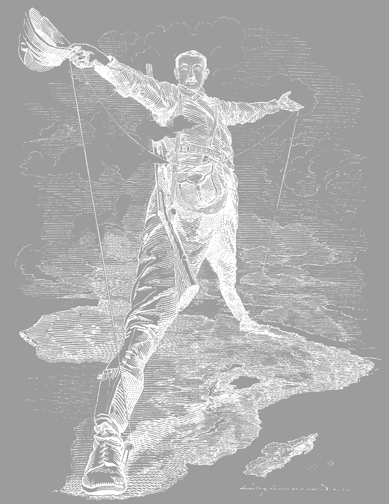

Before World War I, many of the European nations were expanding their power in Africa, in just a span of thirty years, Africa would go from indigenous rule to European Colonies. Europeans were already present in Africa before this rapid change due to merchants and missionaries. The European conquest occurred mostly due to superior technology, military and economies. And for many of these nations, colonialism was a way to expand their power outside of European borders. All major powers of World War 1 had claims in Africa and Asia, where the British Empire had much more than others. 
The British Empire before 1880 was in a golden age, where the phrase the “Sun never sets on the British Empire” was true, Britain had control of Australia, India, major parts of Africa, Egypt and Canada. The British were known for their strong navy but also the ability to use their colonies to produce various goods. France had Vietnam, parts of North Africa, while Germany had colonies in Indonesia and Africa. Colonization was done not just to expand borders to but to produce more economic opportunities. Imperialism was also important to these nations, as they were not just controlling these colonies by trade, but by stronger military force, and for some of these nations in the past to expand their borders they would go to war with neighboring countries. The Austro-Hungarians did this, where by going to war with the Ottomans they were able to take more land, but also start to make claims in the Balkans. Imperialism and the drive to expand borders is still a problem today, where Russia has recently ceded a part of Ukraine via invasion. Though most nations are not considered imperialistic, many nations exert their strength without claiming other parts of countries, the United States is a great example of this, where it has over 800 military bases in over 70 countries across the globe.